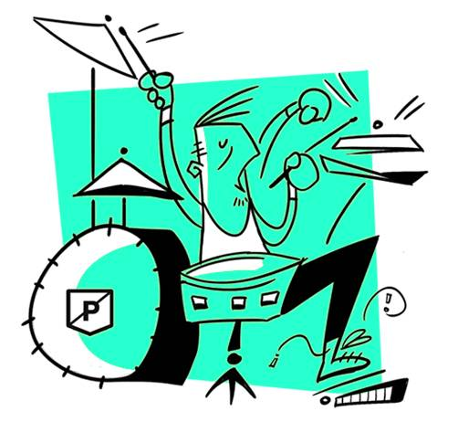

les 3 meilleursbatteurs du monde etleurs solosinoubliables
Ils font palpiter la musique et les coeurs de ceux qui l'écoutent. Les batteurs, traditionnellement installés à
l'arrière de la scène, sont pourtant l'essence même de la musique : le rythme. Un tempo qui peut se faire très
speed, très puissant dans les genres musicaux que nous avons choisi d'aborder aujourd'hui : le rock, le hard
rock et leurs enfants. Voici notre sélection des meilleurs batteurs de tous les temps. La liste ne peut être
exhaustive, et si vous considérez qu'elle peut-être améliorée, n'hésitez pas à nous signaler vos héros des
baguettes !

john bonham
Un sacré bonhomme, ce Bonham. John Bonham, alias Bonzo, génie enchaîné, déchaîné, à ses fûts, a fait les plus
belles heures des lives de "Led Zeppelin". Exemple, ce morceau de bravoure sur "Moby Dick" au Royal Albert Hall
en 1970. Sur cette performance purement bluffante (mais juste à titre d’exemple !), il frappe même les peaux à
mains nues. Erigé au rang de "meilleur batteur de tous les temps" par le lectorat de "Rolling Stone" en 1973, ce
natif du Worcestershire, mort à seulement 32 ans, reste une référence pour tous les amateurs de (très) bonnes
baguettes.
KEITH MOON
Au cas (improbable) où vous n’auriez jamais entendu parler des "Who", honte à vous car vous ne regardez même
pas les Experts. Volontairement, nous avons choisi le titre (devenu générique emblématique de la série) "Who are
you" de la bande de Roger Daltrey. Voici deux vidéos, dont l’une isole l’enregistrement de l’intro et du groove
de feu le diaboliquement talentueux Keith Moon. De quoi donner une petite idée de la sauvage virtuosité de celui
qui a inspiré Animal, le batteur survolté du Muppet Show.
philp rudd
Précis, puissant, généreux dans son style et énorme dans son groove, Phil Rudd est l’un des sales gosses qui
ont fait le succès d'"AC/DC". L’Australien d’aujourd’hui 62 ans a certes eu des problèmes avec Malcolm Young
mais sa participation à la bande emblématique du hard rock aura été déterminante.